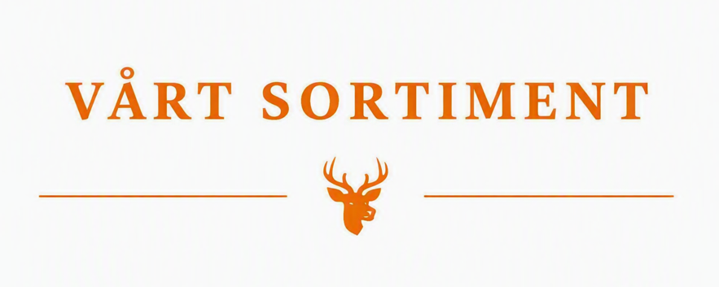

Vårt sortiment

Kött från Afrika
Upptäck vårt utbud av kött från den afrikanska kontinenten.

KÖTT, VILTKÖTT, AFRIKANSKT
Kudukött
Ursprung: Sydafrika
249:-
249 kr/kg
Mört och smakrikt viltkött av kudu från Sydafrika.
Köttet är magert och har en fyllig viltsmak.
Passar utmärkt att grilla, steka eller tillaga varsamt
på låg temperatur. Servera gärna med exempelvis
rostade rotfrukter, svamp eller en mustig sås.
- Producent:
- African Meats
- Förpackning:
- Vakuumförpackad
- Leveranstid:
- 14 dagar

KÖTT, VILTKÖTT, AFRIKANSKT
Vattenbuffel
Ursprung: Centralafrika
399:-
399 kr/kg
Fylligt, mörkt kött med kraftig smak och tydlig umami.
Mindre "vilt" än europeiskt vilt, mer åt mustig nöt.
Passar utmärkt till långkok, grytor och BBQ.
Serveras gärna med rotfrukter, örtsås eller mustiga rödviner.
- Producent:
- African Meats
- Förpackning:
- Vakuumförpackad
- Leveranstid:
- 12 dagar

KÖTT, VILTKÖTT, AFRIKANSKT
Struts
Ursprung: Centralafrika, Sydafrika
449:-
449 kr/kg
Mört och magert kött med ren, mild viltsmak och en ton av sötma.
Liknar en blandning av nöt och kalv men med djupare arom.
Perfekt att grilla eller steka snabbt på hög värme.
Serveras bäst med rödvinssås, grillade grönsaker eller potatisgratäng.
- Producent:
- African Meats
- Förpackning:
- Vakuumförpackad
- Leveranstid:
- 16 dagar

KÖTT, VILTKÖTT, AFRIKANSKT
Zebra
Ursprung: Centralafrika, Sydafrika
549:-
549 kr/kg
Magert och smakrikt kött med tydlig viltsmak och en lätt sötma.
Liknar hästkött men är mer aromatiskt.
Bäst att steka eller grilla medium rare.
Serveras med pepparsås, rostad palsternacka eller en syrlig gelé.
- Producent:
- African Meats
- Förpackning:
- Vakuumförpackad
- Leveranstid:
- 9 dagar
Kött från Asien
Upptäck vårt utbud av kött från den asiatiska kontinenten.

KÖTT, VILTKÖTT, ASIATISKT
Orm
Ursprung: Asien
299:-
299 kr/kg
Fast, vitt kött med mild smak som påminner om kyckling
men med en lätt metallisk ton.
Passar bra i wok, soppor eller grillspett.
Serveras med citrus, chili eller ingefära för att lyfta smaken.
- Producent:
- Asian Snake Farm
- Förpackning:
- Vakuumförpackad
- Leveranstid:
- 7 dagar

KÖTT, VILTKÖTT, ASIATISKT
Sköldpadda
Ursprung: Sydasien
449:-
449 kr/kg
Gelatinrikt kött med djup, fyllig smak, ofta beskrivet
som en blandning av kyckling, fisk och kalv.
Vanligt i långkok, buljonger och curryrätter.
Serveras med ris, kokosmjölk eller aromatiska örter.
- Producent:
- Asien Meats Express
- Förpackning:
- Vakuumförpackad
- Leveranstid:
- 21 dagar

KÖTT, VILTKÖTT, ASIATISKT
Yak
Ursprung: Asien
389:-
389 kr/kg
Mört, mörkt kött med ren och elegant smak,
liknande en blandning av nöt och ren.
Lätt sötma och hög saftighet.
Perfekt för stekning, grillning eller slow-cook.
Serveras med svamp, rödvinssås eller rotselleripuré.
- Producent:
- Asien Meats Express
- Förpackning:
- Vakuumförpackad
- Leveranstid:
- 18 dagar

KÖTT, VILTKÖTT, ASIATISKT
Skorpion
Ursprung: Asien
549:-
549 kr/kg
Lätt nötighet och mild umami.
Vanligt som snacks eller friterat.
Serveras bäst med chili, lime eller som topping på risrätter.
Smaken varierar beroende på art och beredning.
- Producent:
- Asien Meats Express
- Förpackning:
- Vakuumförpackad
- Leveranstid:
- 12 dagar
Kött från Oceanien
Upptäck vårt utbud av kött från den oceaniska kontinenten.

KÖTT, VILTKÖTT, OCEANIEN
Buffel
Ursprung: Oceanien
249:-
249 kr/kg
Smakrikt och mustigt kött med tydlig viltkaraktär
men mjukare än afrikansk buffel.
Passar bra till grillning och långkok.
Serveras med rökig BBQ-sås, rotfrukter eller potatis.
- Producent:
- Oceanien Meats
- Förpackning:
- Vakuumförpackad
- Leveranstid:
- 22 dagar

KÖTT, VILTKÖTT, OCEANIEN
Krokodil
Ursprung: Oceanien
359:-
359 kr/kg
Fast, vitt kött med mild smak — en blandning av kyckling och fisk.
Passar utmärkt att grilla, steka eller använda i curryrätter.
Serveras med citrus, vitlök eller kokosbaserade såser.
- Producent:
- Oceanien Meats
- Förpackning:
- Vakuumförpackad
- Leveranstid:
- 22 dagar

KÖTT, VILTKÖTT, OCEANIEN
Emu
Ursprung: Oceanien
539:-
539 kr/kg
Mört, mörkt kött med ren och elegant smak,
liknande en blandning av nöt och ren.
Lätt sötma och hög saftighet.
Perfekt för stekning, grillning eller slow-cook.
Serveras med svamp, rödvinssås eller rotselleripuré.
- Producent:
- Oceanien Meats
- Förpackning:
- Vakuumförpackad
- Leveranstid:
- 23 dagar

KÖTT, VILTKÖTT, OCEANIEN
Känguru
Ursprung: Oceanien
279:-
279 kr/kg
Mycket magert kött med kraftig, ren viltsmak och en lätt sötma.
Bäst att grilla snabbt på hög värme.
Serveras med rödvinssås, sötpotatis eller enbärssås.
- Producent:
- Oceanien Meats
- Förpackning:
- Vakuumförpackad
- Leveranstid:
- 24 dagar
Kött från Sydamerika
Upptäck vårt utbud av kött från den sydamerikanska kontinenten.

KÖTT, VILTKÖTT, SYDAMERIKANSKT
Kaiman
Ursprung: Sydamerika
369:-
369 kr/kg
Mört och fast vitt kött med mild smak som påminner om
en blandning av kyckling och fisk, men med en lätt sötma
och ren viltkaraktär. Perfekt att grilla, steka eller
använda i mustiga grytor.
Serveras bäst med citrus, vitlökssmör eller kryddiga rödvinssåser.
- Producent:
- South America Exotic Meat
- Förpackning:
- Vakuumförpackad
- Leveranstid:
- 14 dagar

KÖTT, VILTKÖTT, SYDAMERIKANSKT
Marsvin
Ursprung: Sydamerika
129:-
129 kr/kg
Saftigt och smakrikt kött med en ren, mild viltsmak
och en ton som liknar en fylligare variant av kyckling.
Vanligt att ugnsrosta eller grilla hel.
Serveras med örtolja, rostad majs eller potatisrätter.
- Producent:
- South America Exotic Meat
- Förpackning:
- Vakuumförpackad
- Leveranstid:
- 12 dagar

KÖTT, VILTKÖTT, SYDAMERIKANSKT
Lama
Ursprung: Sydamerika
449:-
449 kr/kg
Magert och mörkt kött med rund, elegant smak,
en blandning av nöt och lätt vilt.
Mild sötma och fin textur gör det perfekt för grillning,
stekning eller långkok.
Serveras med rödvinssås, rotselleri eller grillade rotfrukter.
- Producent:
- South America Exotic Meat
- Förpackning:
- Vakuumförpackad
- Leveranstid:
- 10 dagar

KÖTT, VILTKÖTT, SYDAMERIKANSKT
Alpacka
Ursprung: Sydamerika
489:-
489 kr/kg
Mycket mört och magert kött med ren, nyanserad smak
och en lätt söt ton.
Liknar en mildare version av lamakött men med mer elegans.
Passar utmärkt att steka eller grilla medium rare.
Serveras med pepparsås, svamp eller rostade rotfrukter.
- Producent:
- South America Exotic Meat
- Förpackning:
- Vakuumförpackad
- Leveranstid:
- 15 dagar